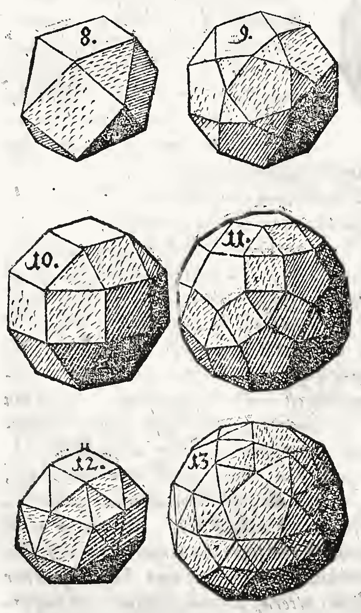

Propositio XXVIII: Tredecim Corpora Archimedea¶
XXVIII. Propositio.
Perfectae in solido congruentiae gradus inferioris, species sunt tredecim; ex quibus tredecim oriuntur :term:`Archimedea Corpora <archimedean-solids>`.
f. 0086 · p. 62Cùm enim misceantur in hoc gradu figurae diversae, quare per propos. XXI. miscebuntur aut duarum aut trium specierum figurae. Quòd si duarum; tunc inter eas vel sunt Trigoni vel non sunt.
Igitur ex Trigonis et Tetragonis fiunt solida tria, quibus quidem def. IX. competat. Nam illa rejicit formas hasce tres, in quibus solidum angulum claudunt, cum uno Tetragonico plano angulo, tam duo, quàm tres plani Trigonici; aut cum duobus Tetragonicis, unus Trigonicus; quia in primo casu unus solus Tetragonus est, fitque dimidium Octaëdri; et anguli solidi sunt diversiformes; in secundo duo soli Tetragoni, in tertio duo soli Trigoni: quae per X, sunt imperfectae congruentiae.
Restant ergò modi hi, in quibus angulum solidum claudunt plani, Primùm, quatuor Trigonici et unus Tetragonicus. Sunt enim minores 4 rectis. Congruunt igitur sex Tetragoni et Triginta duo (id est 20 et 12.) Trigoni, et fit figura Triacontaoctohedrica, quod appello Cubum simum. Hic in schemate sequenti pictus est Numero 12.
Quinque enim Trigonici plani et unus Tetragonicus superant quatuor rectos, cùm debeant ad solidum claudendum esse minores quatuor rectis, per XVI. Sic etiam quatuor Trigonici et duo Tetragonici. Tres verò Trigonici et duo Tetragonici faciunt quatuor rectos.
Secundò duo Trigonici et duo Tetragonici minus habent quatuor rectis; Hic igitur congruunt octo Trigoni et sex Tetragoni ad formandum unum Tessareskadecaëdron, quod Cuboctaëdron appello. Pictum est hic num: octavo. Duo verò Trigonici cum tribus Tetragonicis superant 4 rectos.
Tertiò unus Trigonicus et tres Tetragonici minus habent 4. rectis. Hic ergò congruunt octo Triangula et octodecim (id est 12 et 6) quadrangula, ad unum Icosihexaëdron, quod appello sectum Rhombum Cuboctaëdricum: vel Rhombicuboctaëdron. Pictus est hic numero 10.
In his igitur tribus sunt Tetragoni juxta Trigonos: sequitur ut et Pentagonicos iis seorsim associemus.
Quinque plani Trigonici juxta unum Pentagonicum non stant, quia neque juxta minorem eo, Tetragonicum, stare poterant. Quatuor ergò Trigonici, cum uno Pentagonico, minus efficiunt 4 rectis, et congruunt octoginta (id est 20. et 60) Trigoni, cum duodecim Pentagonis, ad formandam Ennenecontakadyhedron, quod appello Dodecaëdron simum: Pingitur hic numero 13. Et in hoc ordine simorum, Icosaëdron posset esse tertium, quod est quasi Tetraëdron simum.


Tres planos Trigonicos si uni Pentagonico associaveris, fit quod suprà, ut duo solum Pentagoni veniant in solidum; et si duos Trigonicos uni pentagonico, venit unus solus Pentagonus in solidum: fitque illic Zona vel columna media, hic Pyramis, partes Icosaëdri: nec anguli solidi sunt hic ejusdem speciei; quia unus ambitur, ut in Icosaëdro, quinque Trigonicis. Et transactum est cum unico Pentagonico.
At tres Trigonici cum duobus Pentagonicis plus efficiunt 4 rectis. Transactum igitur est cum tribus Trigonicis in societatem Pentagonicorum adsciscendis.
Duo Trigonici cum duobus Pentagonicis minus efficiunt 4 Rectis. Congruunt igitur viginti Trigoni et duodecim Pentagoni in unum Triacontakadyhedron, quod appello Icosidodecahedron. Pingitur hic Numero 9. Cum uno Pentagonico duos Trigonicos jam rejecimus. Transactum igitur est cum duobus Trigonis.
Unus Trigonicus cum tribus Pentagonicis plus quàm 4 rectos efficit, cum duobus verò per XXIII. nihil regulare, quia Pentagonus est figura imparilatera. Sicque transactum est cum Pentagonis in societate Trigonorum.
Trigonici quatuor cum uno Hexagonico, et duorum duobus Hexagonicis implent planitiem: at tres cum duobus sunt majores 4 rectis, cùm uno Hexagonico duo sunt aequales uni Hexagonico, quare rejecti per XXII. Restat ut unus Trigonicus cum duobus Hexagonicis copuletur. Itaque congruunt quatuor Trigoni cum quatuor Hexagonis in unum Octaëdron, quod appello Truncum Tetraëdron. Pingitur Numero 2. fol. sequenti.
Trigonici quatuor cum uno Heptagonico et majoribus, superant 4 rectos; nulla igitur porrò mentio facienda est quatuor Trigonicorum: nulla etiam trium, ob causas saepè allegatas: duo verò cum figurâ unâ Hexagono majori in binis planis, superant 4 rectos: nulla igitur neque duorum porrò est facienda mentio; cum binis planis figurae majoris: nec duorum cum uno plano figurae majoris, quia illi superantur ab hoc, quod rejectum est ax: XXII. Restat examinandus hic casus, cùm unus Trigonicus duobus planis figurae majoris Hexagonâ copulatur: atqui cum duobus Heptagonicis rejicitur per XXIII. ut et cum omnium imparilaterarum duobus: cum duobus verò Octogonicis, fit corpus, in quo congruunt octo Trigoni et sex Octogoni in unum Tessarakadecahedron, quod appello Cubum Truncum. Ejus figuram habes signatam Num: 1. fol. seq.
Cum duobus Decagonicis, fit corpus, in quo congruunt viginti Trigoni et 12 Decagoni, in unum Triacontakadyhedron, quod Appello Truncum Dodecaëdron. Id signatum est inter figuras sequentes Num. 3. Cum duobus Dodecagonicis impletur planities, nec fit solidus angulus, multòque minus cum majoribus. Et transactum est in universum cum Trigonis: in dualitate quidem specierum.
Cùm ergò inter binas planorum species non amplius sunt Trigoni: minima porrò figura erit Tetragonus. Atqui Tetragonici tres, cum uno majoris plani angulo, superant 4 rectos: duo verò Tetragonici cum uno majoris, non tolerantur, ob definitionem IX, quia majoris species figurae tantùm duae reciperentur in solidum. Unus igitur Tetragonicus cum duobus Pentagonicis rejicitur per XXIII: cum duobus Hexagonicis coit; et congruunt sex Tetragoni cum octo Hexagonis in unum Tessarakadecaëdron, quod Appello Truncum Octaëdron, Pingitur numero 5. sequentis schematis. Unus Tetragonicus cum duobus Heptagonicis aliis-
que imparilaterarum rejicitur per XXIII. cum duobus Octogonicis, planum locum implet: cum majoribus etiam superat 4 rectos; nec assurgit ad solidum angulum formandum. Ita transactum est cum Tetragono, cùm duae solae debent esse planorum species.
Duo Pentagonici cum uno Hexagonico aut quocunque alio unico rejectitium quid inchoant, per XXIII, quod suprà etiam de Trigonico et Tetragonico cum binis Pentagonicis usurpavimus. Insuper cum uno Decagonico planitiem sternunt, nec cum illo aut majoribus assurgunt in soliditatem.
Unus ergò Pentagonicus cum duobus Hexagonicis minus facit 4 rectis; et congruunt duodecim Pentagoni cum viginti Hexagonis in unum Triacontakaidyhedron, quod appello Truncum Icosihedron. Formam habes signatam numero 4. Nec plura expectanda à Pentagono. Nam unus Pentagonus cum duobus Heptagonicis jam superat 4. rectos.
Hexagonicus cum duobus aliis implet planitiem, cum majoribus superat 4 rectos. Itaque hic finis est mixtorum ex duabus speciebus.
Quòd si trium specierum Plana concurrere possunt ad unum angulum solidum: Primùm anguli duo plani, unus Tetragoni, alter Pentagoni superant 2 rectos; majores his, multò magis: tres verò Trigonorum trium, aequant 2 rectos: nequeunt igitur tres Trigonici admitti, ne summa omnis superet 4 rectos. Duo verò Trigonici cum uno Tetragonico et uno Pentagonico vel pro eo Hexagonico, aut quocunque majori, rejiciuntur, per pr. XXIII. quia Trigonus imparilatera figura cingi deberet Tetragono et Pentagono, vel pro eo Hexagono etc.
Unus igitur Trigonicus cum duobus Tetragonicis et uno Pentagonico, minus efficiunt 4 rectis, et congruunt 20 Trigoni cum 30 Tetragonis et 12 Pentagonis, in unum Hexacontadyhedron, quod appello Rhombicosidodecaëdron, seu sectum Rhombum Icosidodecaëdricum. Pingitur num. 11. fol. antecedentis.
Unus Trigonicus, duo Tetragonici, cum uno Hexagonico, aequant rectos quatuor; cum uno majori, superant; nec ad solidum assurgunt. Mittamus igitur duos Tetragonicos.
Unus Trigonicus, unus Tetragonicus, et duo Pentagonici superant 4 rectos; multòque magis si bini majores plani anguli admiscerentur. Desinunt igitur misceri anguli plani quaterni ad formandum unum solidum: desinit ergò et Trigonus ingredi mixturam triplicem. Nam unus Trigonicus, unus Tetragoni-

cus et unus pentagonicus, aut quicunque alius hujus loco, rejiciuntur per XXIV, quia trigonus est imparilatera figura.
Cùm igitur porrò sint tres solùm anguli plani: nulla inter figuras toleratur imparilatera, per eandem XXIV.
Tetragonicus igitur, cum Hexagonico et Octogonico minimis, minus faciunt 4 rectis; et congruunt 12 Tetragoni, 8 Hexagoni, et 6 Octogoni, in unum Icosihexaëdron, quod appello truncum Cuboctaëdron: non quòd truncatione nasci possit; sed quia simile est truncato Cuboctaëdro. Pingitur num. 6.
Tetragonicus cum Hexagonico et Decagonico, minus 4 rectis efficiunt: et congruunt 30 Tetragoni, 20 Hexagoni et 12 Decagoni, in unum Hexacontadyhedron, quod appello truncum Icosidodecaëdron, simili de causâ ut proximum. Pingitur num. 7.
Si pro Decagonico succedat in societatem Dodecagonicus; implentur 4 recti, nec fit solidum; sic etiam si pro Hexagonico succedat Octogonicus, et aliquis, Octogonico major, sit tertius; superantur 4 recti: nec si absit Tetragonicus, et socientur tres distinctarum figurarum parilaterarum majores. Igitur stat omnis Archimedeorum familia intra num. 13. quod erat demonstrandum.
XXIX. Consectarium¶
Figurae congruae sunt in universum duodecim, octo Radicales seu Primae, et quatuor auctae seu Stellae.
Trigonus. 2. Tetragonus. 3. Pentagonus. 4. Hexagonus. 5. Octogonus. 6. Decagonus. 7. Dodecagonus. 8. Icosigonus. 9. Stella Pentagonica. 10. Stella Octogonica. 11. Stella Decagonica. 12. Stella Dodecagonica.
Gradus congruentiae distincti sunt. In primo sunt Trigonus et Tetragonus, quia congruunt tam in solido, quàm in plano, tam singularum specierum inter se, quàm junctarum, et cum aliis.
Secundo gradu consistunt Pentagonus cum stellâ suâ. Nam congruunt et singularum specierum inter se, in solido: et tradunt mutuas operas in plano: sed potior est Pentagonus; quia congruit etiam cum aliis nonnullis tam in plano, quàm in solido.
Tertius est Hexagoni, quia figurae hujus speciei congruunt in plano, cum aliis verò tam in solido quàm in plano.
Quartum gradum tenent Octogonus et Decagonus cum stellis suis. Nam Radicales illae, cum aliis nonnullis congruunt in solido, stellae verò cum figuris singularum specierum quadamtenùs: in plano verò omnes quatuor congruunt cum aliis, magis tamen variè magisque perfectè Octogonica secta.
Quintus gradus habet Dodecagonum cum stellâ suâ; quia in solido quidem minimè; at in plano multifariam congruunt cum aliis; in solido igitur sola magnitudine impediuntur. Causâ planitiei praeferenda est haec secta gradui quarto.
Ultimus gradus est Icosigoni, quia is non nisi in plano, nec nisi cum aliis, et cum illis ipsis quoque imperfectè congruit.